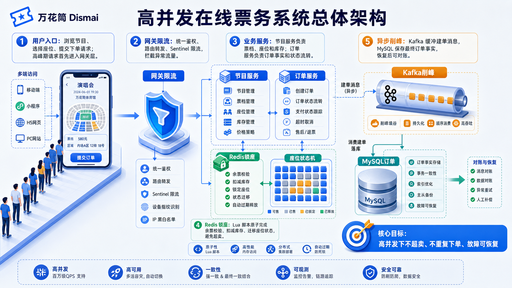
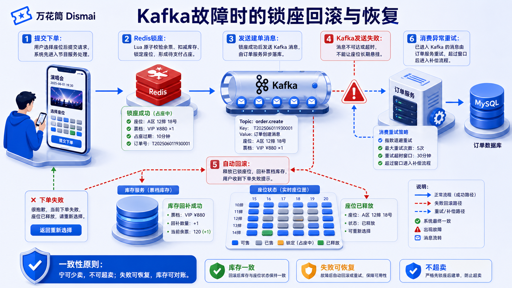
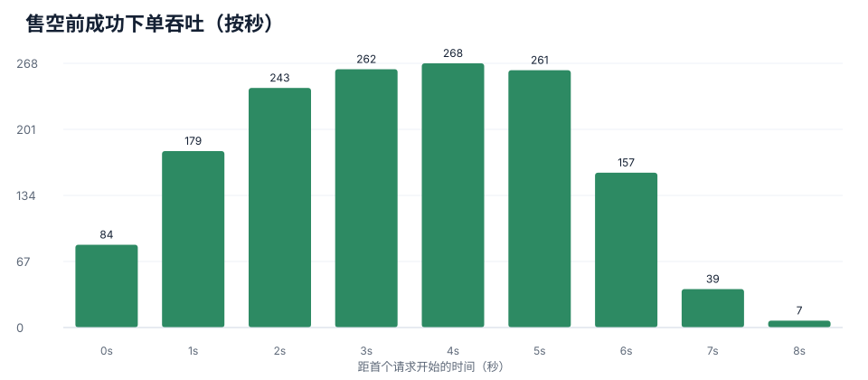
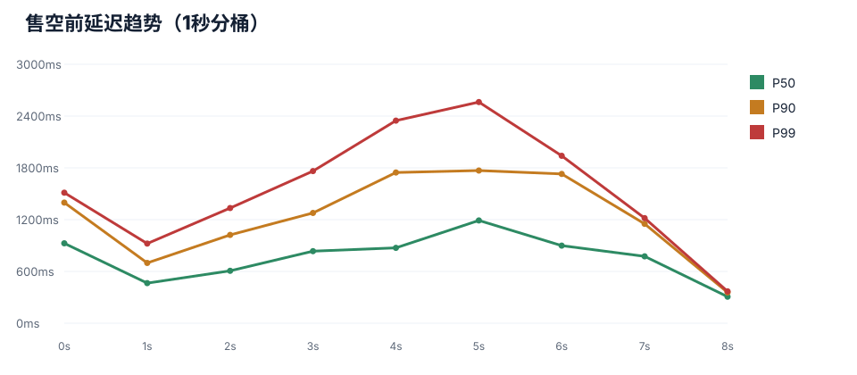

万花筒 Dismai
高并发在线票务系统设计、实现与故障应对
期末大作业展示报告。重点回答：黑产流量如何拦截、锁座如何不超卖、Kafka/Redis/数据库故障时系统如何保护一致性。

汇报结构
先讲业务挑战，再讲架构与关键链路，最后集中回答故障场景。
1. 业务与挑战
- 票务系统的高并发特征
- 热点节目、热点票档、热点座位
- 黑产、重复提交、超卖风险
2. 系统设计
- 微服务职责拆分
- 读写路径分离
- 下单 V4 与锁座状态机
3. 故障处理
- Kafka 异常处理
- Redis 异常处理
- 数据库异常处理
证明系统不是简单堆组件，而是围绕“不超卖、不重复下单、故障可恢复”做了明确的工程取舍。
票务系统为什么适合讨论分布式
抢票不是普通 CRUD，它把流量、状态、一致性和故障处理集中到同一条链路上。
热点极端集中
- 热门节目开售瞬间 QPS 激增
- 同一票档和座位被大量请求争抢
库存不可超卖
- 一个座位只能属于一个订单
- 余票不能出现负数
用户体验敏感
- 页面要快速展示
- 下单不能长期阻塞
依赖不可完全可靠
- Kafka 可能延迟或不可用
- Redis/DB 可能故障
系统总体架构
Gateway 统一入口；Program 负责节目与库存状态；Order 负责订单事实；Redis 和 Kafka 分别承接热点状态与异步削峰。
课程知识点与项目落点
每个关键组件都有明确职责，不为了使用技术而使用技术。
核心下单链路
下单 V4 把高并发冲突控制在 Redis 原子脚本之前，并将数据库写入异步化。
组合校验器
@RepeatExecuteLimit
shardId 0-9
降低单机冲突
扣库存+锁座
异步建单
超时释放
为什么要分片
- 同一节目/票档是热点
- 随机 shardId 拆散锁竞争
- 提高并发吞吐
为什么用 Lua
- 读余票、扣库存、迁移座位必须原子
- 避免“查到有票，更新时已被抢”
为什么用 Kafka
- 锁座后快速返回订单号
- 订单落库异步追上
- 缓冲数据库写入峰值
如何防止黑产刷流量
系统采用分层防护，尽量在请求进入核心库存状态机之前过滤异常流量。
防刷不是单点能力，而是入口、身份、行为、资源四层共同降低异常流量对 Redis 和数据库的冲击。
如何实现锁座
锁座不是简单加锁，而是座位状态机的原子迁移。
未售
Redis: PROGRAM_SEAT_NO_SOLD_HASH
用户可选择，余票可扣减
锁定
Lua 原子执行：校验余票 + 扣库存 + 迁移座位
订单待支付，超时前别人不可再买
已售 / 释放
支付成功转已售；失败、取消、超时则释放回未售
通过延迟队列和回滚逻辑补偿
为什么这个锁座方案不会超卖
把“互斥”问题转化为 Redis 单线程脚本中的状态迁移问题。
并发风险
- 两个用户同时选择同一座位
- 多个用户同时购买同一票档余票
- 订单服务写库慢于用户请求速度
- Kafka 或数据库短暂故障导致状态不一致
系统约束
- 座位是否可卖以 Redis 状态为准
- 扣库存和锁座在同一 Lua 脚本内完成
- 失败时只做补偿释放，不凭空创建订单
- 订单异步落库，但座位抢占权先被确定
Kafka 故障处理
Kafka 是异步建单通道，不是座位一致性的唯一保障；发送失败必须回滚锁座。

Redis 挂了怎么办
Redis 是购票写链路的状态机载体。故障时继续卖票会破坏一致性。
不能绕过 Redis
- 余票状态在 Redis
- 座位状态迁移依赖 Lua 原子性
- 绕过后数据库无法承受抢票峰值
故障时策略
- 写链路熔断，下单失败
- 提示用户稍后重试
- 避免超卖和悬挂状态
恢复后策略
- 以数据库为事实源
- 重建节目、票档、座位缓存
- 必要时执行对账修复
Redis 故障时，读链路可以展示降级内容；写链路必须停止抢票，因为锁座状态机不可用。
数据库挂了怎么办
数据库是最终事实源；故障处理重点是限制写入窗口并保证恢复后可校正。
短暂故障
- Kafka 消息可短时间缓冲
- 订单消费者失败后重试
- 数据库恢复后继续落库
长时间故障
- 写链路应熔断
- 防止锁座无限堆积
- 对用户明确返回失败
恢复与校正
- 以订单表为准
- 校正 Redis 座位和余票
- 重新执行缓存初始化任务
一致性模型与补偿机制
本系统不是所有步骤都强一致，而是对座位抢占强约束，对订单落库最终一致。
强约束部分
- 同一座位不能重复锁定
- 同一票档余票不能扣成负数
- 同一用户/节目重复请求被限制
最终一致部分
- 订单异步落库
- 支付状态异步更新
- 超时取消异步释放
补偿动作
- Kafka 失败回滚缓存
- 消息过期释放座位
- 支付/取消加订单号维度锁
先在 Redis 确定座位抢占权，再让订单系统通过 Kafka 和补偿机制追上。
代码证据：关键能力能对应到实现
关键设计均对应到具体模块、类和补偿逻辑，便于检查与复现。
@RepeatExecuteLimit(userId, programId)
shardId = random(0..9)
localLock(programId, ticketCategoryId, shardId)
programOrderService.createNewAsync(..., shardId)
ProgramOrderService
Redis Lua: remain check + seat migration
Kafka send success -> return orderNumber
Kafka send failure -> rollback locked seats
CreateOrderConsumer
consume create_order topic
delay too long -> cancel program cache data
幂等
@RepeatExecuteLimit- Redisson 标记
- 本地锁 + 分布式锁
锁座
- Redis Hash
- Lua 原子迁移
- 失败回滚
异步
- KafkaTemplate
- Consumer 重试
- 延迟消息释放
防刷
- Sentinel Gateway
- 验证码计数
- 布隆过滤器
本次演示阻断修复
修复会影响系统展示和构建验证的阻断问题，不把安全漏洞纳入本次范围。
管理员状态丢失
- 问题：刷新 /admin 后 store.mobile 为空
- 结果：管理员被路由守卫踢回首页
- 影响：后台展示不可控
修复方式
- 手机号写入 Cookie
- Pinia 初始化恢复手机号
- 路由和登录页统一使用 userStore.isAdmin
Dockerfile 修复
- 原先强依赖 package-lock.json
- 但 lockfile 被 .gitignore 忽略
- 改为 package*.json，缺 lockfile 时 npm install
验证结果
覆盖前端构建、前端镜像、Compose 编排、后端 Java 17 Docker 构建路径。
PASS docker build -t dismai-frontend-check ./vue3
PASS docker compose config
PASS docker build --target build -t dismai-build-check .
NOTE Host Java is 11. Project requires Java 17.
Docker build path uses Java 17 and passes.
可展示
- 首页/节目/选座/订单
- 管理后台入口
可说明
- 锁座状态机
- 故障处理边界
售空前压测结果
只统计 1500 条真实成交请求，售空后拒绝请求不混入分位数。
0 超卖
- 1500 库存
- 1500 条成交响应
- 成交数不超过库存
8.736s 售空
- 首个成交请求开始
- 到最后成交完成
- 完成吞吐 171.7/s
268/s 峰值
- 按请求开始时间
- 1 秒成交峰值
- 库存快速耗尽
P99 2.25s
- P50 758ms
- P95 1.74s
- Max 2.70s

售空前延迟分布
旧全局 P99 被售空后 71,270 条拒绝请求污染；真实成交请求没有 3s 以上长尾。
核心样本
- 响应 195B 恰好 1500 条
- 对应真实成交/锁座成功
- 售空后 200B 请求剔除
分位数
- P50 758ms
- P90 1542ms
- P99 2249ms
边界说明
- 203B 业务拒绝单独记录
- JTL 未保存响应体
- 建议后续写入业务 code

当前边界与生产增强方向
主动说明边界比被追问时临场解释更稳。
消息可靠性
- 可增强 Outbox
- 本地消息表
- 死信队列
Redis 可用性
- 可增强 Redis Cluster
- 多副本哨兵
- 热点 key 监控
数据库可靠性
- 主从切换
- 备份恢复
- 订单对账任务
治理能力
- 动态限流规则
- 灰度发布
- 链路追踪
课程项目已经覆盖核心分布式机制；生产级可靠性还需要围绕消息投递、缓存高可用、数据库容灾继续增强。
关键问题说明
每个问题先给出工程结论，再对应到系统实现点。